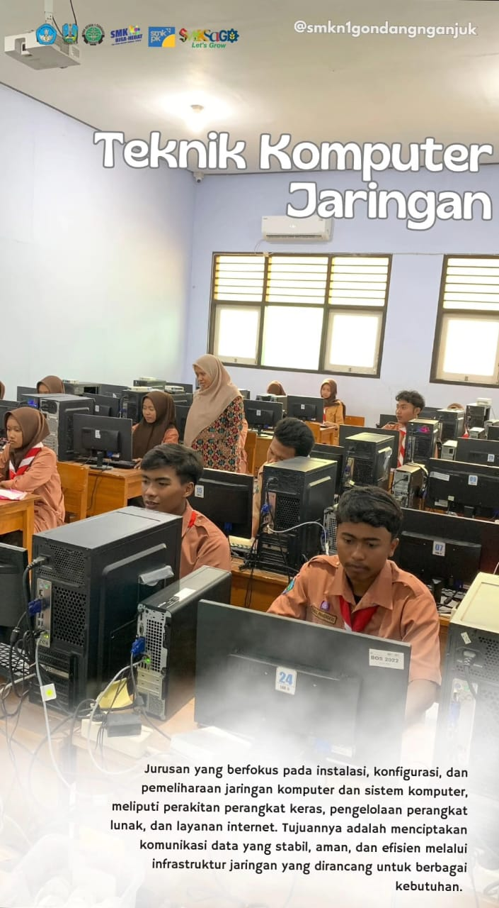
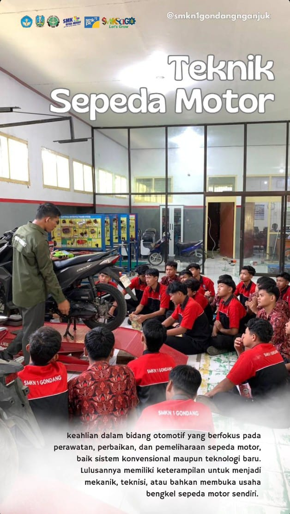
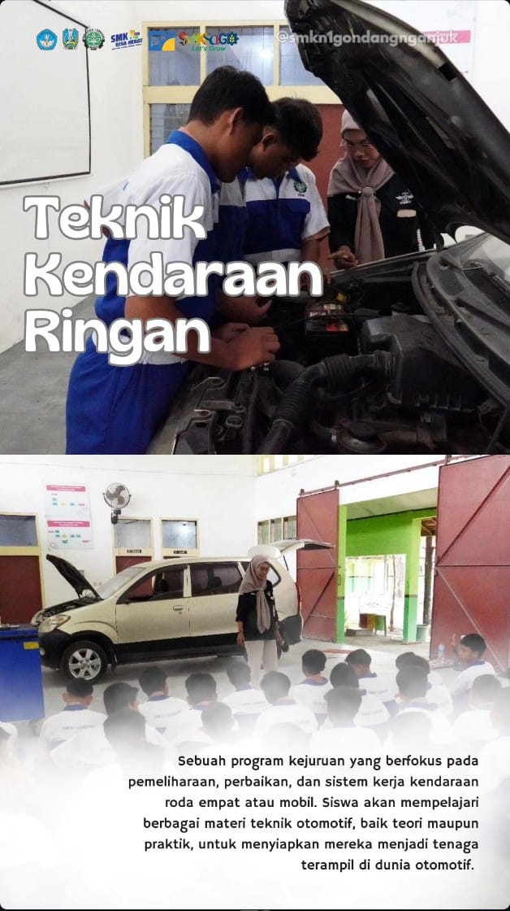
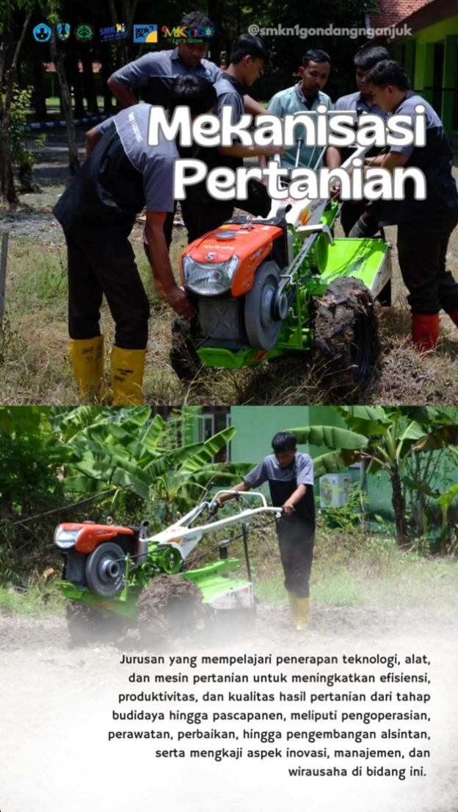
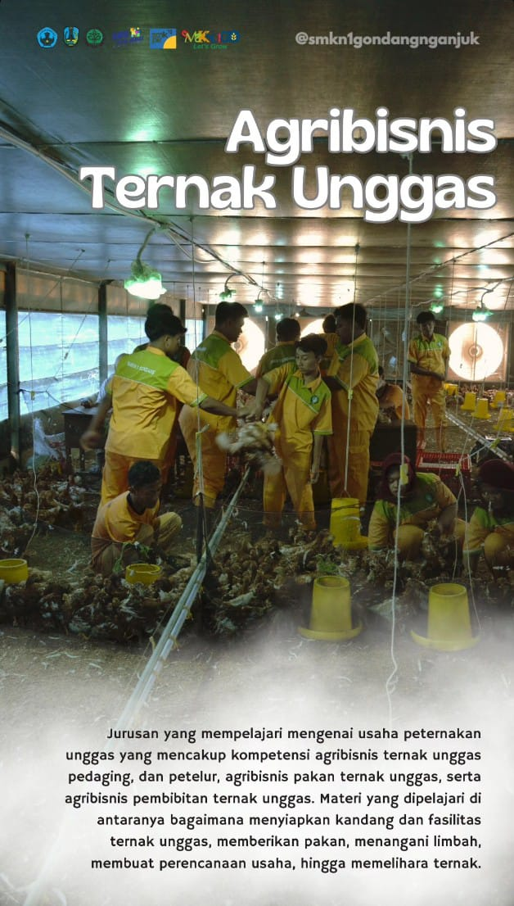
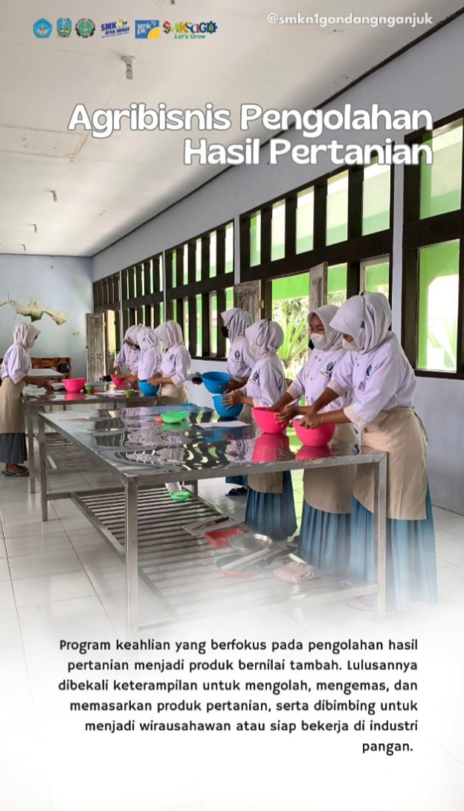
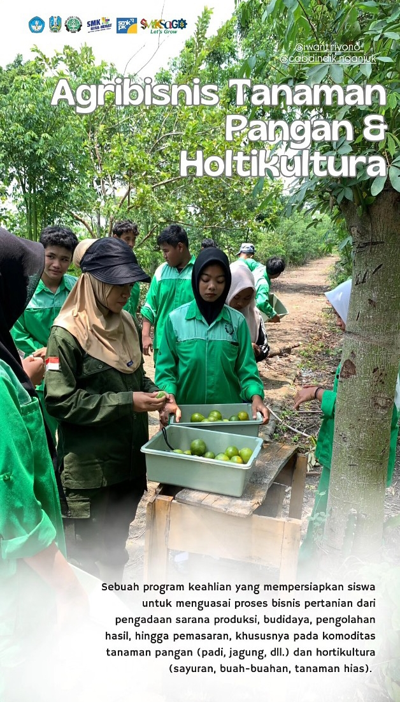

SMK Negeri 1 Gondang
Gondang, Nganjuk • Jawa Timur
Gondang, Nganjuk • Jawa Timur
Unggul dalam prestasi, berkarakter, dan siap bersaing di era digital bersama SMK Negeri 1 Gondang.
Lihat Jurusan[SMK Negeri 1 Gondang](http://googleusercontent.com/map_location_reference/0) adalah sekolah menengah kejuruan yang mengutamakan kualitas praktik dan kerjasama industri untuk mencetak tenaga profesional. Kami berlokasi di Jl. Raya Gondang Lengkong, Nganjuk.
Rombel
Akreditasi
Jurusan

Mempelajari perakitan komputer, instalasi jaringan, server, cloud computing, serta keamanan jaringan.

Fokus pada pemeliharaan dan perbaikan mesin motor, sistem kelistrikan, dan manajemen bengkel.

Mempelajari mesin mobil, sistem kemudi, transmisi, dan diagnosa kerusakan mobil modern.

Pengoperasian dan pemeliharaan alat modern pertanian seperti traktor, combine harvester, dan teknologi irigasi.

Manajemen ternak unggas mulai dari pembibitan, pemberian pakan, hingga pemasaran produk.

Mengolah bahan baku pertanian menjadi produk pangan bernilai jual tinggi dan higienis.

Budidaya tanaman sayur, buah, dan tanaman hias dengan teknologi modern dan hidroponik.